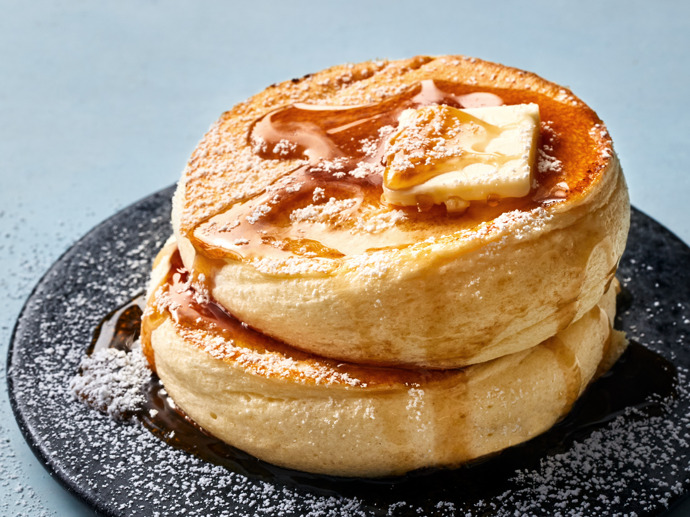

Souffle Pancakes

Japanese Souffle Pancakes
These fluffy pancakes can been all over the cafes in Tokyo.
They seem complicated to make but with this recipe you can make it easily in your own home
This recipe will take 30 minutes to make and will serve 4 pancakes.
Ingredients
- 1.5 cups flour - spooned and leveled
- 3 tablespoons powdered sugar
- 2 teaspoons baking powder
- 0.5 teapsoon salt
- 1.25 cups dairy milk
- 4 tablespoons butter - melted
- 0.5 teaspoon almond extract
- 1 large egg yolk - plus 3 large egg whites
- 0.5 teaspoon cream of tartar
- syrup and powdered sugar for serving
Steps
- In a medium bowl whisk together flour, powdered sugar, baking powder, and salt.
- In a second bowl stir together milk, melted butter, vanilla or almond extract, and the egg yolk.
- In a third bowl whip the egg whites and cream of tartar 3-4 minutes until stiff peaks form.
- Stir milk mixture into dry ingredients until just combined (a few lumps are fine).
- Gently fold whipped egg whites into the batter until just incorporated (do not overmix).
- Preheat a deep skillet with a lid over low heat and spray the inside of a 3-inch baking ring (I used three rings at a time) with nonstick spray and place in the preheating pan.
- Fill each ring halfway full with batter. Place lid on the pan and allow to cook for 5 minutes.
- Slide a spatula underneath to life the pancake and ring and use tongs to quickly flip it over. Allow to cook another 2-3 minutes until golden. Repeat with remaining batter.
- Serve immediately topped with syrup and powdered sugar.